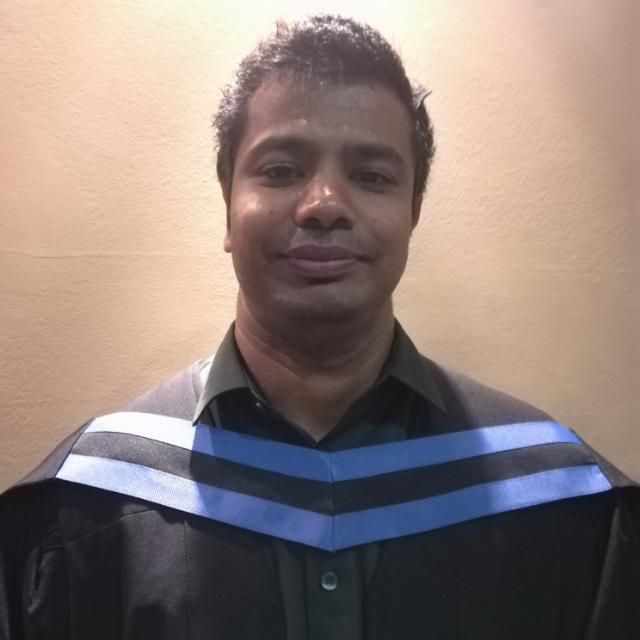

Kyle Padayachee Resume

About Me:
I am a driven South African professional with experience in the I.T support and business fields and keen interest in the public and private sector.
I am extremely hardworking, motivated, organised and dependable.
I wish to expand my career by developing new skills as well as contributing ideas to potential employers.
I am a strong believer in teamwork, have a passion for quality, solid planning skills and strong analytical abilities.
I consider myself a leader with the ability to follow when required. I am committed to continuous improvement and am always willing to learn and grow.
I.T Skills
- DevOps
- HTML 5
- CSS
- Java
- Basic A+/N+ Networking
- C# (Visual Studio 2019)
- mySQL Workbench
- Git Bash Terminal(Bit Bucket)
- Agile/JIRA Software
- C++
- Software Testing
Business Skills
- Project Management Skills
- Scrum meeting
- Administrative Management
- Business Management
- Basic Statistics
- Data Capturing
- Microsoft Word, Microsoft Excel and Powerpoint
Contact Details
Mobile Number: 083 289 8376
Email: padayachee.kyle@yahoo.com
LinkedIn: Kyle LinkedIn Profile
Education
National Diploma in I.T Oval International College, 2009
National Diploma in Business Management:Unisa, 2019
Matric Certificate: Southlands Secondary School, 2005
Career Development
Scrum Master Certification Udemy,2021
Agile Project Management with JIRA Udemy,2021
C# Full Course From Beginner to Advanced,Udemy,2021
National Certificate - Core Java Programming:Richfield Institute of Technology,2020
National Certificate - Project Management in I.T: Richfield Institute of Technology,
2019
National Certificate - C++ Programming, Richfield Institute of Technology, 2019
Working Experience
| Company Name |
Duration |
Position Held |
Description |
| AntzArt cc |
January 2017-November 2020 |
Assistant Manager |
Supervise teams and manage performance, ensuring timeous and quality output.
Held daily team meetings on the progress of daily activities and how quickly we can manufacture and develop products / services requested by the client needs.
Managing clients included:
Appointed as CSR - Customer Service Representative:
I have a national diploma in I.T and basic A+/N+ knowledge.
I have worked on Connecting Roland Printers to basic LAN connection and maintaining the machine and server for the office area.
I have knowledge and experience in SDLC using the Agile methodology:
Using Agile principles (Create, Design, Implement and Quality Assurance) to ensure the product we created is off high standards and quality.
|
| AntzArt cc |
February 2009 - 31 December 2016 |
Digital Print Operator |
Digital printing of banners, stickers, licence disc holders.
Conversion of CorelDraw design image files to Roland ColoRip image files for digital printing.
Calibration of industrial digital printers and fine trimming of printed material.
Accurate placement of material onto banner base and design of machine & hand cut stickers. |
| Focus Financial |
May 2016-November 2016 |
Administrative Clerk(Apprenticeship) |
Processing of new business.
Attending to call queries.
Processing Administration Claims and Medical Aid Applications.
Underwent training with broker consultants.
Attended Discovery and Momentum Product Launches.
Servicing clients on their policies.
Analysing fund fact sheets.
|
| Kelly Recruitment Durban |
July 2010-August 2010 |
Data Capturer |
Going door-to-door capturing residents information and using it for statistical purposes as part of an online survey. |
Personal Development
- 2020:Simple Rest Application Hello World using SpringBoot with IntelliJ.
- Created a Maven project and generated the Spring framework using Spring initializer and Rest Repository
-
2021: Developed a simple Payroll System using C# Programming Language.
- Using C# fundamentals such as Inheritance and Event handling
Allows the user to input the hourly rate and hours. Prompt the user to calculate and display the total gross pay of the employees of the organization.
Used Git Bash to commit the following project and push it to Bitbucket (Source Repository).
- 2019: Developed a Roll-A-Ball Project- Unity 3D Engine
-
Developed a Roll-a-Ball Project using Unity Engine. The objective is the player controls the rolling ball which picks up items by colliding with them, then calculates a score and displays it on the screen. The scripting language C# was used to change player behaviour, allow the ball to collide with other objects and using an input system to move the player with the keyboard.
- 2008: Third Year Project DS3 Management Information Systems East Coast News Agency.
- Developed a Management Information System for a newspaper agency as part of my final year projects at Oval International using UML and use case diagrams, creating, modifying and updating the employee’s details in a SQL database using Microsoft Access.
Events Attented
- 2016: Discovery
- Attended product launch at the Durban ICC ,November 2016
- 2016:Old Mutual
- Attended product launch in Suncoast, August 2016
- 2006:Oval International Sports Day
- Team Beach Volleyball Award,April 2006
Additional Information
- Languages
- English and IsiZulu
- Drivers Licence
- Code 08 Drivers Licence
References:
| Company Name |
Name of Person |
Position Held |
Contact Number: |
| Focus Financial |
Jevaine Naidoo |
Administrator |
078 562 8093 |
| AntzArt cc |
Arulmani Padayachee |
Associate Manager |
083 448 6578 |
| Kelly Recruitment Durban |
Michelle Manager |
HR Consultant |
031 279 9000 |